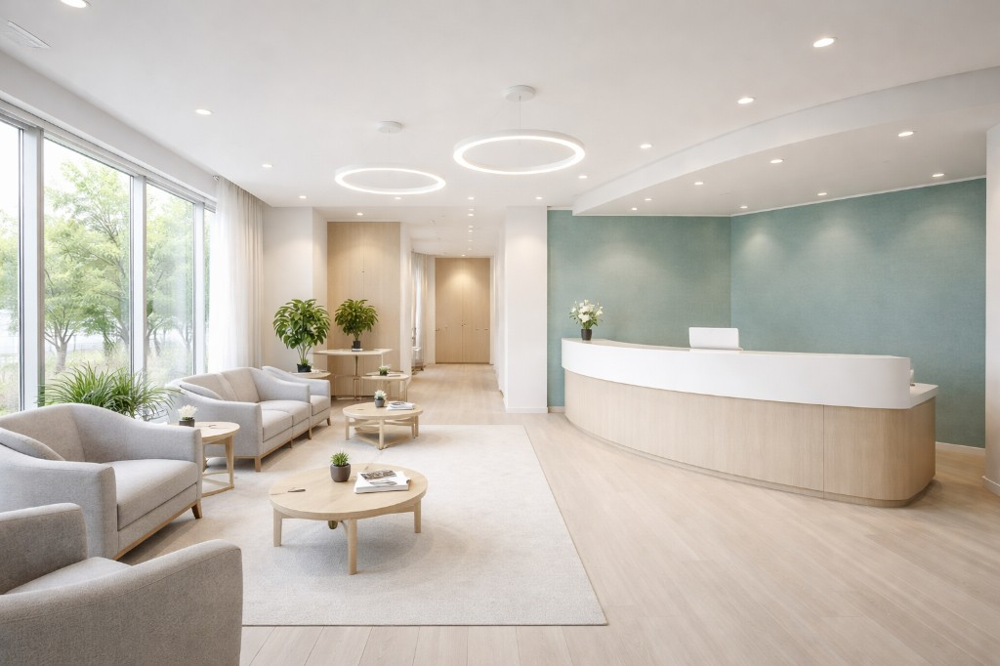
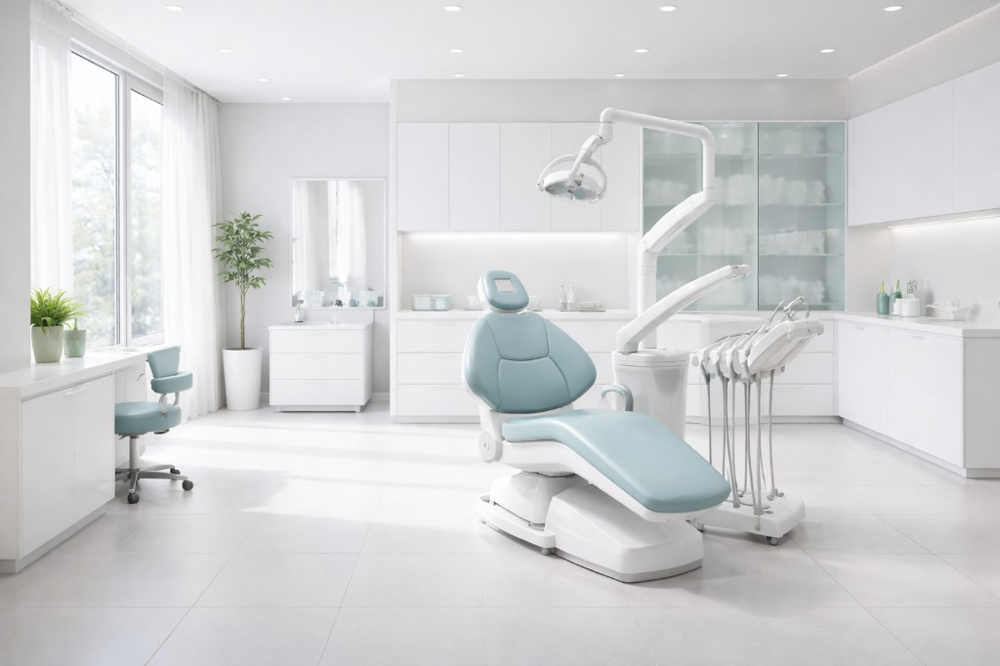

Feature 01
初診カウンセリングを重視
「どこが、いつから、どのように気になるか」を丁寧に伺い、必要な検査と治療の優先順位を整理します。
- 問診と必要検査で現状を把握
- 検査画像を使って分かりやすく説明
ABOUT
治療内容を理解してから選べること、治療後も再発を防げること。
くわら歯科クリニックは「説明」「予防」「衛生管理」を軸に、長く通える診療体制を整えています。

Feature 01
「どこが、いつから、どのように気になるか」を丁寧に伺い、必要な検査と治療の優先順位を整理します。

Feature 02
保険診療・自費診療を含め、メリットと注意点を整理してご提案します。内容に納得いただいてから治療を開始します。

Feature 03
症状が落ち着いた後も、定期チェックとクリーニングを通じて再発しにくい状態を維持します。
歯科外来診療の感染対策指針に基づき、院内体制を整えています。
一方的に治療を進めず、患者さまと相談して診療方針を決定します。
初診時は「問診・検査・説明・同意」の順に進めます。来院前の案内から治療後フォローまで、受付と診療側で連携して対応します。
症状の部位、いつからか、痛みの程度、服用中のお薬をお知らせください。
保険証（またはマイナ保険証）、お薬手帳、紹介状（お持ちの方）をご持参ください。
問診・検査・説明を含めて45〜60分が目安です（症状により前後します）。
ご都合が変わった場合は、分かり次第ご連絡ください。待ち時間軽減にご協力をお願いします。
※急性症状（強い痛み・腫れ・出血）は電話連絡を優先してください。症状に応じて当日対応可否をご案内します。